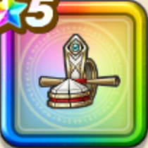

天地雷鳴士の烏帽子
攻略班 9.5点 / けもの系への耐性+5%エレメント系への耐性+5%けもの系への耐性+5%悪魔系への耐性+5%じゅもんダメージ+8%【天地雷鳴士】全属性ダメージ+2%ザバ属性じゅもんダメージ+4%メラ属性じゅもんダメージ+6%
くわしい特徴
【レベル別習得スキル】 Lv1けもの系への耐性+5% Lv5戦闘終了時にMPを3回復する Lv8エレメント系への耐性+5% Lv10じゅもんダメージ+8% Lv12【天地雷鳴士】全属性ダメージ+2% Lv15ザバ属性じゅもんダメージ+4% Lv18メラ属性じゅもんダメージ+6% Lv20けもの系への耐性+5% Lv23さいだいMP+5 Lv25悪魔系への耐性+5% 【限界突破スキル】 1凸こうげき魔力+12 2凸すばやさ+12 3凸守備力+12 4凸さいだいHP+12